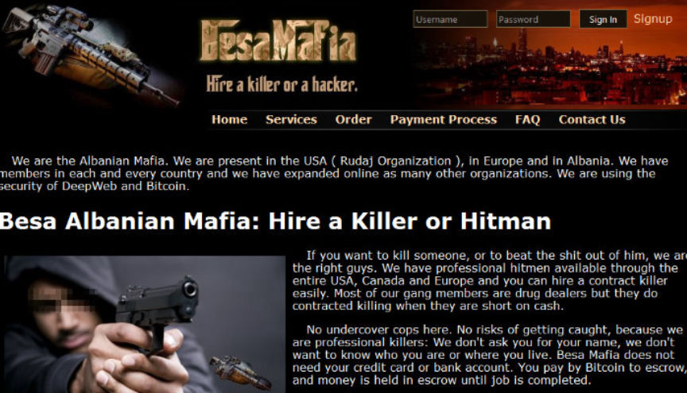
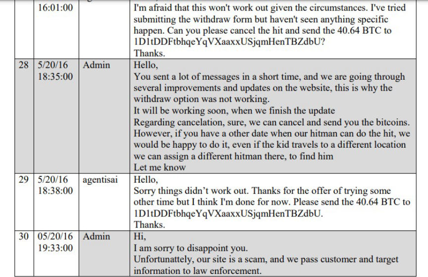
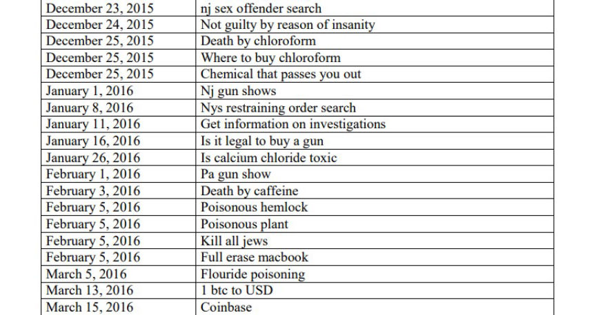
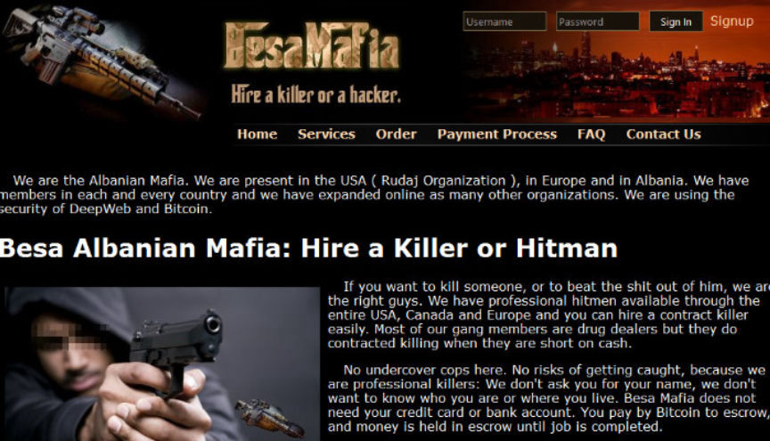
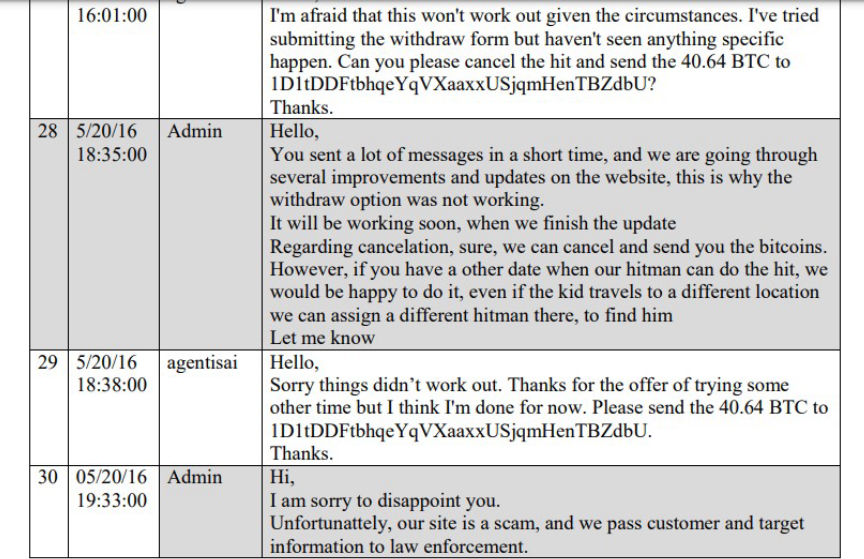
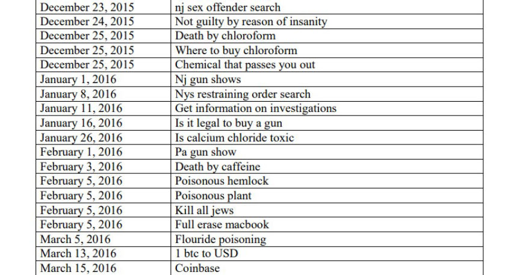

NJ Man Imprisoned for Hiring a Hitman to Kill a Child
~3 min read | Published on 2023-06-28, tagged Child-Abuse, Murder-for-Hire, Sentenced using 511 words.
A New Jersey man was sentenced to 78 months in prison for attempting to hire a hit man on the dark web to murder a child he had sexually abused.

According to court documents, to stop the 14-year-old child he was abusing from testifying against him, 34-year-old John Michael Musbach paid over $20,000 in bitcoin to a fraudulent murder-for-hire site on the dark web for the child to be murdered.
In January 2019, HSI agents in New Jersey received data with communications between the administrators of a dark web murder-for-hire site and users of the site looking to hire hitmen.
In one of the conversations that took place in May 2016, a user going by the username "agentisai" was looking to have a 14-year-old child murdered. Agentisai began by enquiring if a 14-year-old was an acceptable target and disclosing that he had a $20,000 budget. After receiving confirmation from the site's admin, agentisai deposited 40.64 bitcoin into the site and placed an order.
While updating agentsai on the progress of his order, the site's admin told agentisai the hitman assigned to his order had been arrested for cocaine possession while on his way to carry out the hit. The admin then asked agentisai to deposit an extra $5000 in bitcoin for the order to be assigned to a more reliable hitman.

Agentisai eventually gave up and asked the site's admin to send him back his Bitcoin after his attempts to withdraw the funds failed. The admin disclosed that the site was fraudulent and that they forwarded their users' information to law enforcement. To prevent his information from being sent to LE, the admin asked agentsai to send 22 bitcoin.
Information provided to the investigators by Coinbase revealed that agentisai's bitcoin address belonged to an account registered to Musbach. Musbach had also used the account to send the 40.64 bitcoin to the murder-for-hire site.
Musbach began talking to the intended victim in the summer of 2015. The conversations turned sexual and the two exchanged sexually explicit videos and photos of themselves. In September of that year, the child's parents found out that their child was being sexually abused and notified the cops.
The cops arrested Musbach in March 2016 and seized his electronic devices. He pleaded guilty in October 2017 and was sentenced to a two-year suspended sentence in February 2018.
In October 2019, the investigators examined a hard drive seized from Musbach during his arrest in 2016. In addition to numerous searches of the term "agent_isai irc," Musbach's search history revealed that he had been looking for ways to commit murder.

Musbach was arrested in August 2020 and charged with one count of knowingly and intentionally using and causing another to use a facility of interstate and foreign commerce, with the intent that a murder be committed. He pleaded guilty to the charge in February 2023.
In addition to the six years and six months in prison, US District Judge Joseph H. Rodriguez sentenced Musbach to three years of supervised release and ordered him to pay a fine of $30,000.

The murder-for-hire site
According to court documents, to stop the 14-year-old child he was abusing from testifying against him, 34-year-old John Michael Musbach paid over $20,000 in bitcoin to a fraudulent murder-for-hire site on the dark web for the child to be murdered.
In January 2019, HSI agents in New Jersey received data with communications between the administrators of a dark web murder-for-hire site and users of the site looking to hire hitmen.
In one of the conversations that took place in May 2016, a user going by the username "agentisai" was looking to have a 14-year-old child murdered. Agentisai began by enquiring if a 14-year-old was an acceptable target and disclosing that he had a $20,000 budget. After receiving confirmation from the site's admin, agentisai deposited 40.64 bitcoin into the site and placed an order.
While updating agentsai on the progress of his order, the site's admin told agentisai the hitman assigned to his order had been arrested for cocaine possession while on his way to carry out the hit. The admin then asked agentisai to deposit an extra $5000 in bitcoin for the order to be assigned to a more reliable hitman.

Conversation between the site's admin and agenstai
Agentisai eventually gave up and asked the site's admin to send him back his Bitcoin after his attempts to withdraw the funds failed. The admin disclosed that the site was fraudulent and that they forwarded their users' information to law enforcement. To prevent his information from being sent to LE, the admin asked agentsai to send 22 bitcoin.
Information provided to the investigators by Coinbase revealed that agentisai's bitcoin address belonged to an account registered to Musbach. Musbach had also used the account to send the 40.64 bitcoin to the murder-for-hire site.
Musbach began talking to the intended victim in the summer of 2015. The conversations turned sexual and the two exchanged sexually explicit videos and photos of themselves. In September of that year, the child's parents found out that their child was being sexually abused and notified the cops.
The cops arrested Musbach in March 2016 and seized his electronic devices. He pleaded guilty in October 2017 and was sentenced to a two-year suspended sentence in February 2018.
In October 2019, the investigators examined a hard drive seized from Musbach during his arrest in 2016. In addition to numerous searches of the term "agent_isai irc," Musbach's search history revealed that he had been looking for ways to commit murder.

Musbach's browsing history
Musbach was arrested in August 2020 and charged with one count of knowingly and intentionally using and causing another to use a facility of interstate and foreign commerce, with the intent that a murder be committed. He pleaded guilty to the charge in February 2023.
In addition to the six years and six months in prison, US District Judge Joseph H. Rodriguez sentenced Musbach to three years of supervised release and ordered him to pay a fine of $30,000.